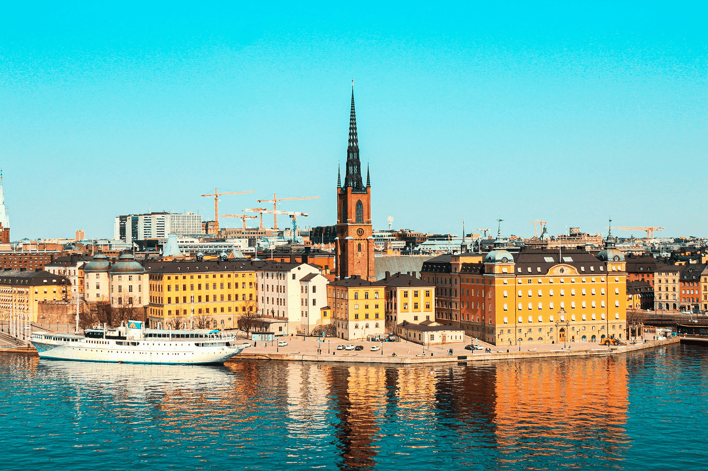
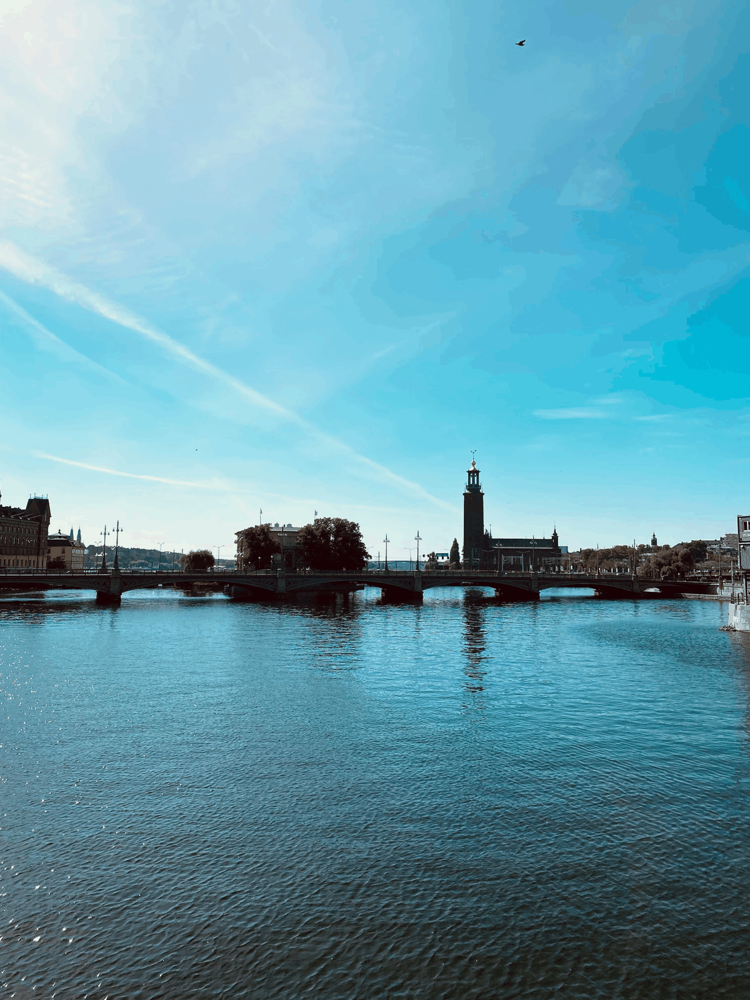
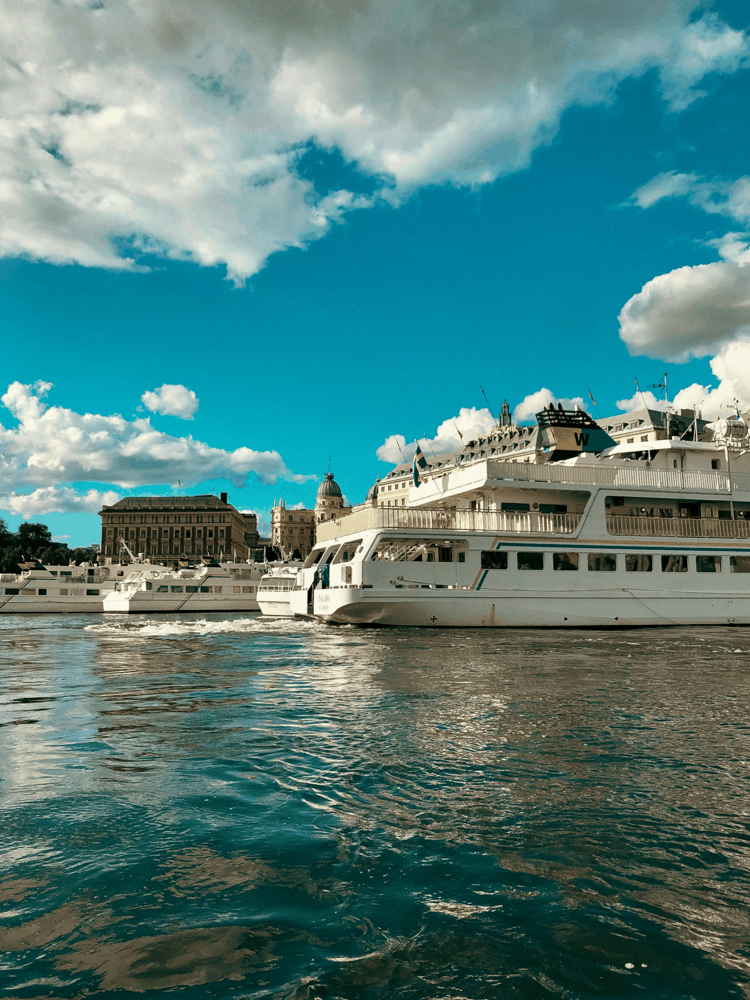
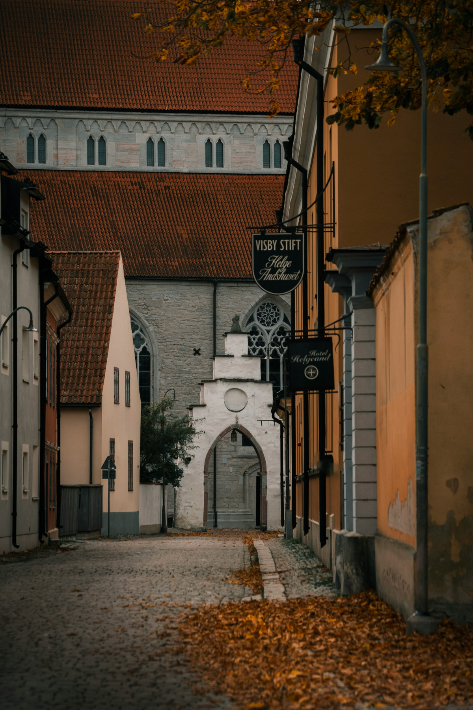
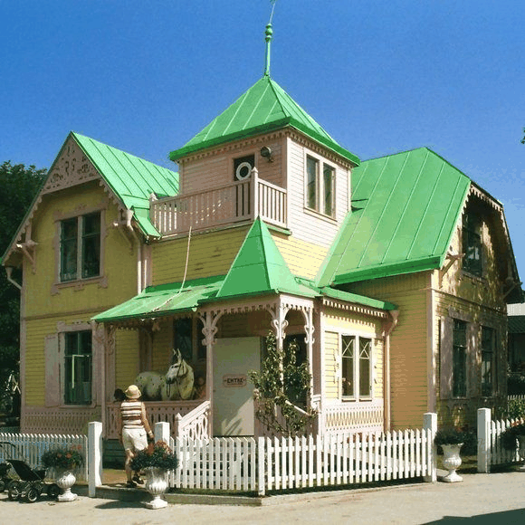
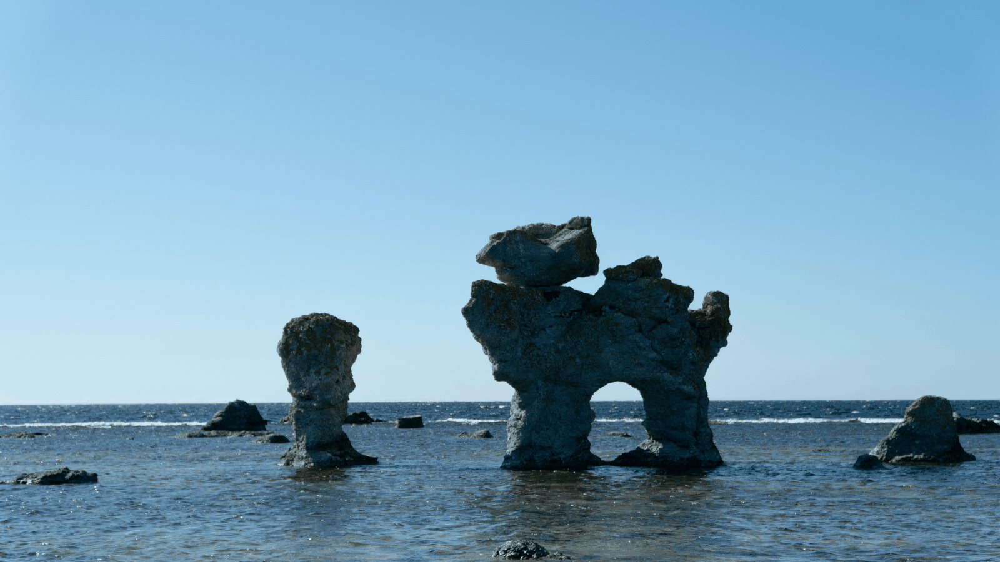
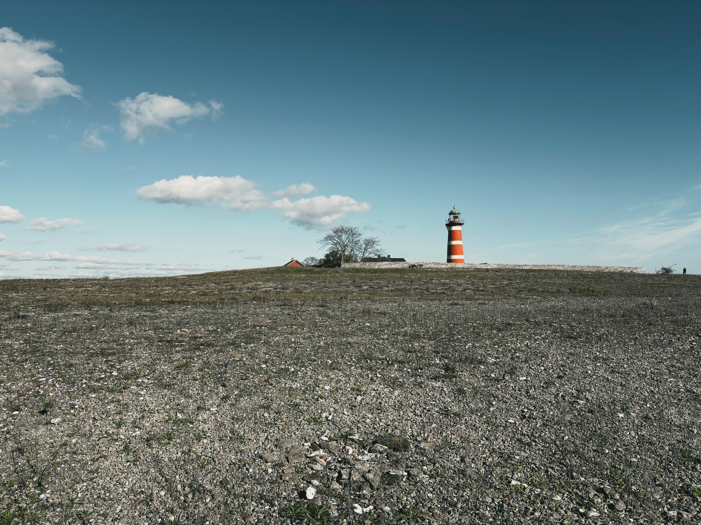

Villa Villekulla
La vera casa utilizzata nelle produzioni di Pippi: un pezzo di immaginario svedese a pochi chilometri da Visby.
Sei giorni tra vicoli, arcipelago, mura medievali, Pippi Calzelunghe e paesaggi di pietra sul Baltico.
Prima una capitale costruita sull'acqua, poi il Baltico e infine un'isola fatta di mura medievali, scogliere, case colorate e paesaggi quasi lunari. L'idea non è usare Gotland come una semplice escursione, ma darle il tempo che merita.

Il viaggio comincia tra le facciate di Gamla Stan, i ponti e il profilo della città riflesso sul mare. I grandi classici restano, ma senza trasformare la prima giornata in una lista di monumenti da spuntare.
Appena ci si sposta verso Södermalm, Stoccolma cambia ritmo: quartieri vissuti, passeggiate panoramiche e viste che fanno capire quanto l'acqua faccia parte della città.

Stoccolma non finisce sul lungomare. Basta salire su un battello per iniziare a vedere la città da un'altra prospettiva e avvicinarsi al suo arcipelago.
È il passaggio perfetto prima di lasciare la capitale: il mare smette di essere soltanto uno sfondo e diventa parte vera del percorso.
Per raggiungere Gotland si scende verso il porto di Nynäshamn e da lì si prosegue in traghetto fino a Visby.
Non è soltanto uno spostamento: è il momento in cui il viaggio cambia completamente scenario, lasciando la capitale per un'isola con un'identità tutta sua.


Mura, torri, rovine e strade acciottolate: Visby sembra costruita per essere esplorata a piedi, senza bisogno di rincorrere una sequenza infinita di attrazioni.
E tra queste strade si nasconde anche un pezzo di cultura pop svedese: diverse scene delle produzioni di Pippi Calzelunghe sono legate proprio a Visby.

A pochi chilometri da Visby si trova Villa Villekulla, la casa originale utilizzata nelle produzioni televisive di Pippi Calzelunghe.
Da qui il viaggio continua verso la costa occidentale, dove le case colorate lasciano spazio alle scogliere e al Baltico. È uno di quei giorni in cui Gotland mostra due facce completamente diverse.

Attraversato lo stretto verso Fårö, l'isola cambia ancora. Lungo la costa compaiono i raukar, grandi formazioni calcaree scolpite dal vento e dal mare.
Tra pietra, spiagge e strade secondarie, questa è la parte più selvaggia dell'itinerario — e quella in cui vale maggiormente la pena lasciare spazio alle deviazioni.
Stoccolma introduce il Baltico. Gotland lo trasforma in paesaggio, storia e strada. Per questo l'isola non viene compressa in una giornata: Visby, Fårö e la costa meritano di diventare una parte del viaggio tanto importante quanto la capitale.
Tre indizi di quello che c'è oltre le tappe più conosciute. Il percorso completo resta nell'itinerario personalizzato.
La vera casa utilizzata nelle produzioni di Pippi: un pezzo di immaginario svedese a pochi chilometri da Visby.
Formazioni di calcare, costa battuta dal vento e paesaggi che sembrano appartenere a un'altra isola.

Il lato più minimale di Gotland: calcare, vecchie cave e tracce industriali immerse in un paesaggio spoglio.
Possiamo costruire il viaggio sui tuoi giorni e sulla stagione in cui parti, scegliendo quanto spazio lasciare ai classici e quanto alle deviazioni Fuori Mappa.
Costruiamo il tuo viaggio ✦